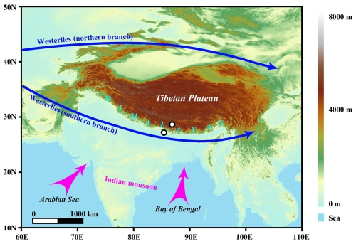
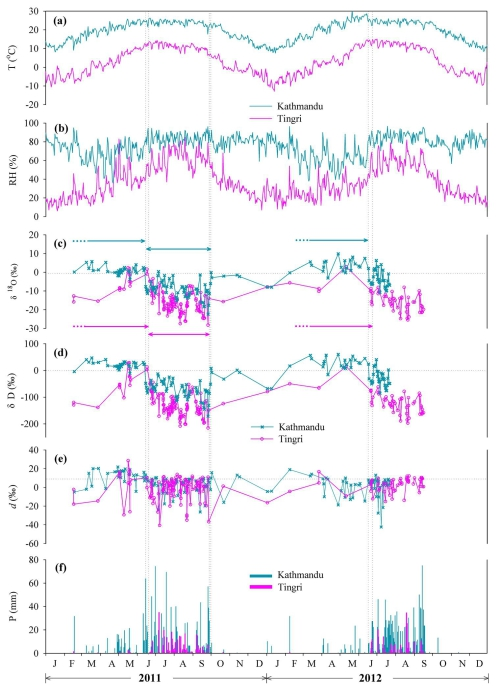
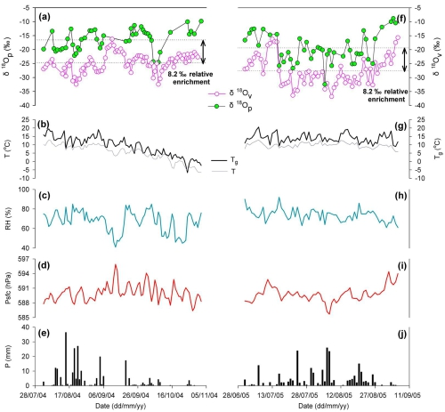

稳定同位素(δ18O、δD)被称为水的“指纹”，其作为一种成熟的技术在气象气候学、水文学、生态学以及地质学等诸多领域都有着广泛的应用。为了在全球范围内调查环境同位素，1961年始，国际原子能机构（IAEA）和世界气象组织（WMO）在全球范围内启动了降水中稳定同位素观测计划（GNIP）。但是这一观测计划在高海拔地区如青藏高原上甚少布设站点。近20多年来，以姚檀栋院士为首的中国科研团队开展了“青藏高原降水稳定同位素观测计划”（TNIP）。这一计划的实施弥补了这一区域相关研究的不足，对深刻理解高原面上水汽来源和水循环过程具有重要意义。
近日，中国科学院青藏高原地球科学卓越创新中心、青藏高原研究所余武生副研究员与合作者以TNIP计划为研究平台，在多圈层（大气圈、水圈、植物圈）以多相态（气态、液态）水体为研究对象，利用稳定同位素技术，开展了相关研究：
水圈：通过在喜马拉雅山南坡加德满都和北坡定日二站点同时监测降水稳定同位素变化（图1），定量刻画了印度季风在喜马拉雅山南、北坡的爆发与撤退时间（图2）。研究发现，在观测期间（2011-2012年），印度季风在喜马拉雅山北坡定日爆发的时间要比其在南坡加德满都的晚一周左右。相比而言，印度季风在喜马拉雅山南北坡撤退的速度更快，其在定日的撤退时间要比其在南部加德满都的要早3天左右(Yu
et al., 2015, Clim Dyn)；通过稳定同位素技术，同样能够很好地刻画季风在横断山脉的进退活动(Yu et al., 2015, Atmos Res)。
大气圈-水圈：通过在青藏高原中部那曲地区同步采集大气水汽和降水样品，揭示了水汽-降水稳定同位素的相互作用机制。研究发现，大气水汽δ18O和降水δ18O的变化趋势相对一致（图3）。降水δ18O组成不但直接地显著地影响当日的水汽δ18O组成，而且能够影响当日之后数日内的水汽δ18O组成。相比之下，水汽δ18O组成只能通过对流活动间接地轻微地影响降水δ18O组成。在研究期间，大气水汽δ18O和降水δ18O的变化极大地依赖于相对湿度、气压和降水量的共同作用，并揭示了不同的水汽来源，尤其是印度季风和高原对流活动对气-液水体同位素的影响。这些研究结果对于该区域及其周边地区的古沉积物记录的解释具有一定的指示意义(Yu
et al., 2015, ACP)。
植物圈：近年来，研究团队进一步将青藏高原水体稳定同位素研究拓展到植物叶片水领域。藏东南植物叶片水稳定同位素能够捕捉当地大气湿度的信息和印度季风活动的信号，这对于进一步合理地解译树轮和正构烷烃等其它气候指示物的稳定氢氧同位素记录指明了新的途径(Yu
et al., 2014, GRL)。
上述研究成果陆续发表于：
Wusheng Yu, Tandong Yao, Lide Tian, Yaoming Ma, Rong Wen, Lochan P. Devkota, Weicai Wang, Dongmei Qu, Tek B.
Chhetri. Short-term variability in the dates of the Indian monsoon onset and retreat on the southern and
northern slopes of the central Himalayas as determined by precipitation stable isotopes. Climate Dynamics, 2015,
doi: 10.1007/s00382-015-2829-1.
原文链接
Wusheng Yu, Feili Wei, Yaoming Ma, Wenjie Liu, Yingyan Zhang, Lun Luo, Lide Tian, Baiqing Xu, Dongmei Qu.
Stable isotope variations in precipitation over Deqin on the southeastern margin of the Tibetan Plateau during
different seasons related to various meteorological factors and moisture sources. Atmospheric Research, 2015,
doi: 10.1016/j.atmosres.2015.11.013.
原文链接
Wusheng Yu, Lide Tian, Yaoming Ma, Baiqing Xu, Dongmei Qu. Simultaneous monitoring of stable oxygen isotope
composition in water vapour and precipitation over the central Tibetan Plateau. Atmospheric Chemistry and
Physics, 2015, 15: 10251-10262.
原文链接
Wusheng Yu, Baiqing Xu, Chun-Ta Lai, Yaoming Ma, Lide Tian, Dongmei Qu, Zhiyong Zhu. Influences of relative
humidity and Indian monsoon precipitation on leaf water stable isotopes from the southeastern Tibetan Plateau.
Geophysical Research Letters, 2014, 41: 7746-7753.
原文链接

图1 喜马拉雅山南北坡降水稳定同位素观测站点（南坡：加德满都，北坡：定日）

图2 喜马拉雅山南北坡加德满都与定日降水稳定同位素日变化特征

图3 青藏高原中部那曲地区大气水汽、降水δ18O日变化特征